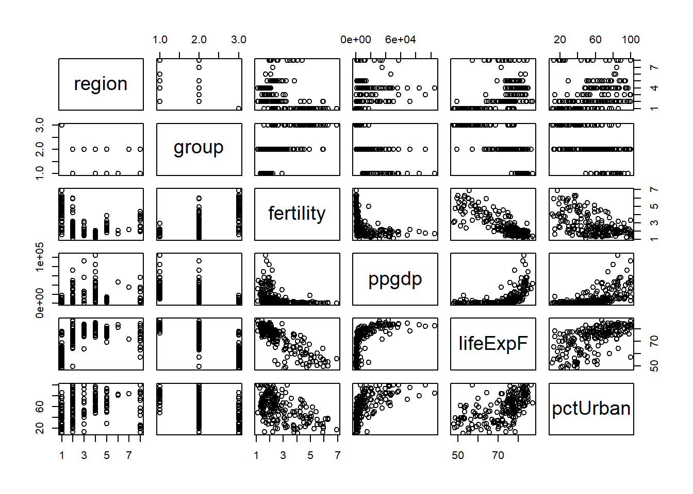
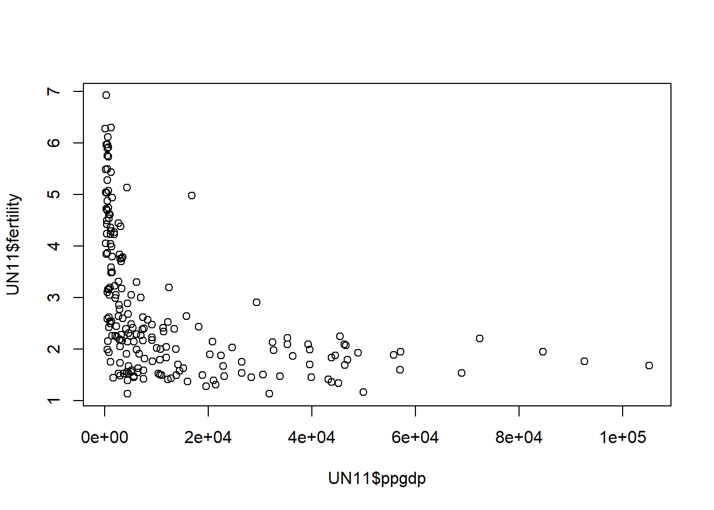
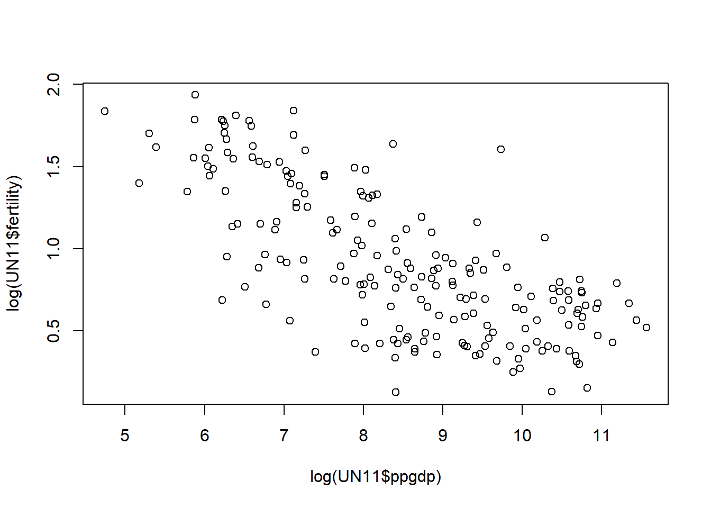

Code
library(alr4)Loading required package: carLoading required package: carDataLoading required package: effectslattice theme set by effectsTheme()
See ?effectsTheme for details.Code
library(smss)library(alr4)Loading required package: carLoading required package: carDataLoading required package: effectslattice theme set by effectsTheme()
See ?effectsTheme for details.library(smss)data(UN11)head(UN11) region group fertility ppgdp lifeExpF pctUrban
Afghanistan Asia other 5.968 499.0 49.49 23
Albania Europe other 1.525 3677.2 80.40 53
Algeria Africa africa 2.142 4473.0 75.00 67
Angola Africa africa 5.135 4321.9 53.17 59
Anguilla Caribbean other 2.000 13750.1 81.10 100
Argentina Latin Amer other 2.172 9162.1 79.89 93summary(UN11) region group fertility ppgdp
Africa :53 oecd : 31 Min. :1.134 Min. : 114.8
Asia :50 other :115 1st Qu.:1.754 1st Qu.: 1283.0
Europe :39 africa: 53 Median :2.262 Median : 4684.5
Latin Amer:20 Mean :2.761 Mean : 13012.0
Caribbean :17 3rd Qu.:3.545 3rd Qu.: 15520.5
Oceania :17 Max. :6.925 Max. :105095.4
(Other) : 3
lifeExpF pctUrban
Min. :48.11 Min. : 11.00
1st Qu.:65.66 1st Qu.: 39.00
Median :75.89 Median : 59.00
Mean :72.29 Mean : 57.93
3rd Qu.:79.58 3rd Qu.: 75.00
Max. :87.12 Max. :100.00
pairs(UN11)
Predictor: ppgdp, Response: fertility
plot(UN11$ppgdp, UN11$fertility)
No, a linear model will not fit this curve.
plot(log(UN11$ppgdp), log(UN11$fertility))
Yes, a simple linear regression will fit this dataset much better.
The slope will not change, but the y-intercept will increase.
The residuals will change.
data(water)summary(water) Year APMAM APSAB APSLAKE
Min. :1948 Min. : 2.700 Min. : 1.450 Min. : 1.77
1st Qu.:1958 1st Qu.: 4.975 1st Qu.: 3.390 1st Qu.: 3.36
Median :1969 Median : 7.080 Median : 4.460 Median : 4.62
Mean :1969 Mean : 7.323 Mean : 4.652 Mean : 4.93
3rd Qu.:1980 3rd Qu.: 9.115 3rd Qu.: 5.685 3rd Qu.: 5.83
Max. :1990 Max. :18.080 Max. :11.960 Max. :13.02
OPBPC OPRC OPSLAKE BSAAM
Min. : 4.050 Min. : 4.350 Min. : 4.600 Min. : 41785
1st Qu.: 7.975 1st Qu.: 7.875 1st Qu.: 8.705 1st Qu.: 59857
Median : 9.550 Median :11.110 Median :12.140 Median : 69177
Mean :12.836 Mean :12.002 Mean :13.522 Mean : 77756
3rd Qu.:16.545 3rd Qu.:14.975 3rd Qu.:16.920 3rd Qu.: 92206
Max. :43.370 Max. :24.850 Max. :33.070 Max. :146345 pairs(water)
Pairs of higher correlation: APMAM & APSAB, APSAB & APSLAKE, OPBPC & OPRC, OPBPC & OPSLAKE, OPBPC & BSAAM, OPRC & OPSLAKE, OPRC & BSAAM, OPSLAKE & BSAAM
data(Rateprof)pairs(Rateprof[, c('quality', 'helpfulness', 'clarity', 'easiness', 'raterInterest')])
Quality, Helpfulness, and Clarity have a strong correlation. Easiness compared to the prior three has a weak relation. raterInterest has little correlation to the other four.
data("student.survey")
summary(student.survey) subj ge ag hi co
Min. : 1.00 f:31 Min. :22.00 Min. :2.000 Min. :2.600
1st Qu.:15.75 m:29 1st Qu.:24.00 1st Qu.:3.000 1st Qu.:3.175
Median :30.50 Median :26.50 Median :3.350 Median :3.500
Mean :30.50 Mean :29.17 Mean :3.308 Mean :3.453
3rd Qu.:45.25 3rd Qu.:31.00 3rd Qu.:3.625 3rd Qu.:3.725
Max. :60.00 Max. :71.00 Max. :4.000 Max. :4.000
dh dr tv sp
Min. : 0 Min. : 0.200 Min. : 0.000 Min. : 0.000
1st Qu.: 205 1st Qu.: 1.450 1st Qu.: 3.000 1st Qu.: 3.000
Median : 640 Median : 2.000 Median : 6.000 Median : 5.000
Mean :1232 Mean : 3.818 Mean : 7.267 Mean : 5.483
3rd Qu.:1350 3rd Qu.: 5.000 3rd Qu.:10.000 3rd Qu.: 7.000
Max. :8000 Max. :20.000 Max. :37.000 Max. :16.000
ne ah ve pa
Min. : 0.000 Min. : 0.000 Mode :logical d:21
1st Qu.: 2.000 1st Qu.: 0.000 FALSE:60 i:24
Median : 3.000 Median : 0.500 r:15
Mean : 4.083 Mean : 1.433
3rd Qu.: 5.250 3rd Qu.: 2.000
Max. :14.000 Max. :11.000
pi re ab aa
very liberal : 8 never :15 Mode :logical Mode :logical
liberal :24 occasionally:29 FALSE:60 FALSE:59
slightly liberal : 6 most weeks : 7 NA's :1
moderate :10 every week : 9
slightly conservative: 6
conservative : 4
very conservative : 2
ld
Mode :logical
FALSE:44
NA's :16
fita <- lm(hi ~ tv, data=student.survey)
#fitb <- lm(pi ~ re, data=student.survey)summary(fita)
Call:
lm(formula = hi ~ tv, data = student.survey)
Residuals:
Min 1Q Median 3Q Max
-1.2583 -0.2456 0.0417 0.3368 0.7051
Coefficients:
Estimate Std. Error t value Pr(>|t|)
(Intercept) 3.441353 0.085345 40.323 <2e-16 ***
tv -0.018305 0.008658 -2.114 0.0388 *
---
Signif. codes: 0 '***' 0.001 '**' 0.01 '*' 0.05 '.' 0.1 ' ' 1
Residual standard error: 0.4467 on 58 degrees of freedom
Multiple R-squared: 0.07156, Adjusted R-squared: 0.05555
F-statistic: 4.471 on 1 and 58 DF, p-value: 0.03879AIC(fita)[1] 77.53632BIC(fita)[1] 83.81935